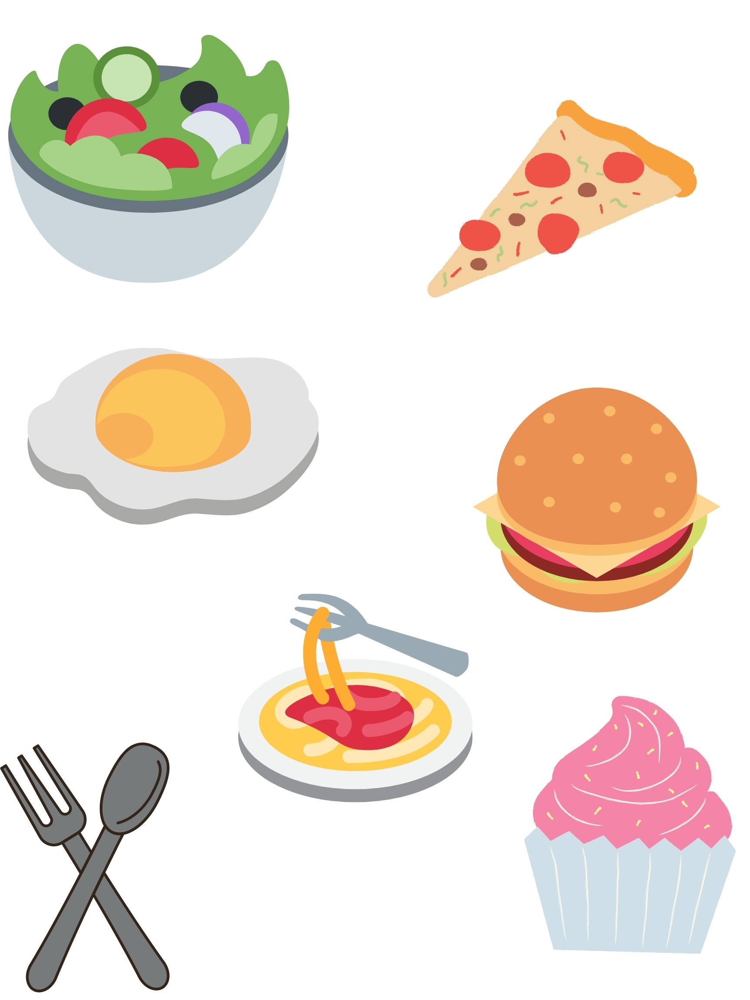

Welcome to Discover Washington's Recipes Page!
Once our website is ready and good to go, you'll be able to find mouth-watering recipes native to Washington. We hand-picked these recipes only for you so that you make a dish in its authentic way and do not struggle to find the right recipe.
Meanwhile, you can sign up to our page and we'll keep you in loop about whatever is ahead of us. We appreciate your love and support.
Have a great day!